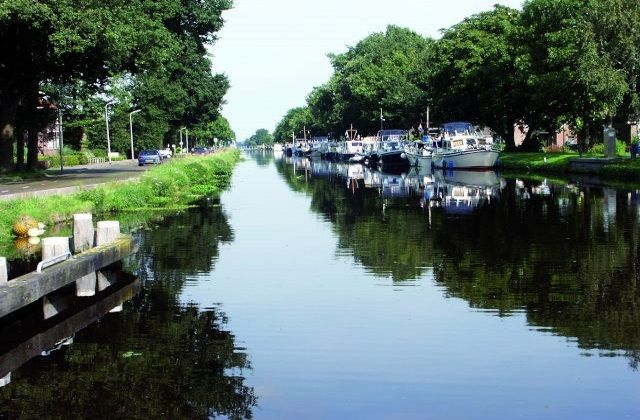
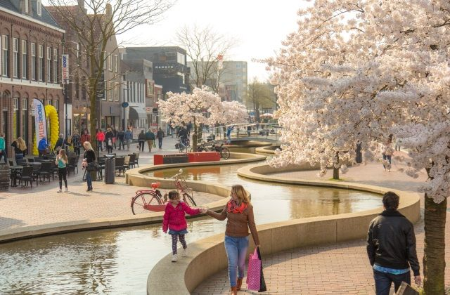

 Het grootste en opvallendste spoor is de Hoogeveense Vaart. Dit kanaal is in de Gouden Eeuw gegraven, om de turf naar het westen te vervoeren.
- Gesticht in 1636
- Bezoek Vincent van Gogh in 1883
- Ontstaan uit turf
- Cascade - langste water-kunstwerk
- Hoogeveense Vaart gegraven in de gouden eeuw
In de 21e eeuw is Hoogeveen bekend vanwege de Cascade, het langste waterkunstwerk van Europa.